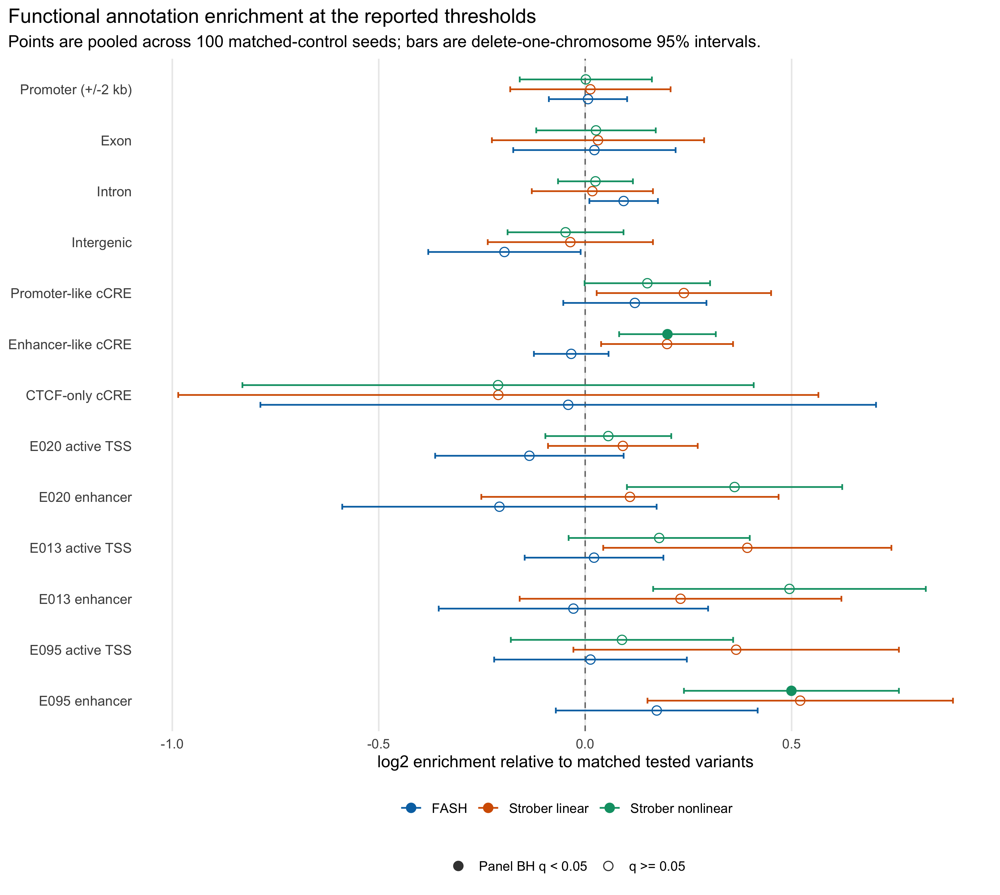
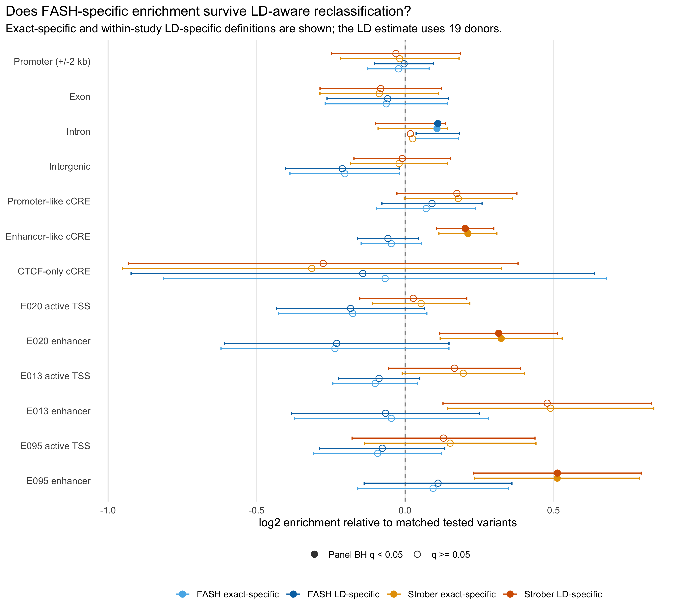
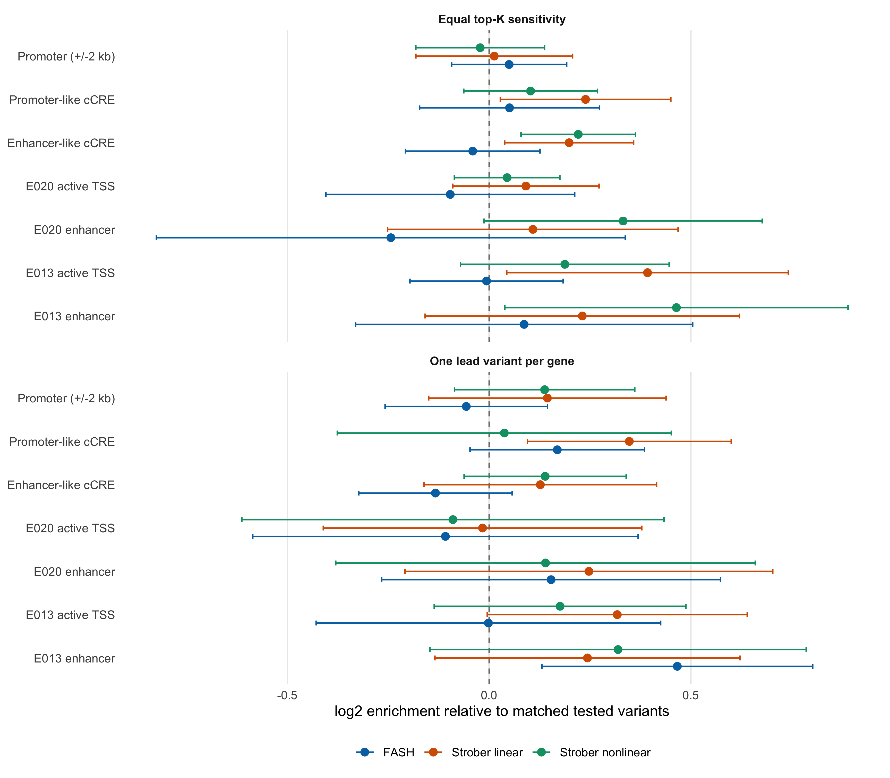
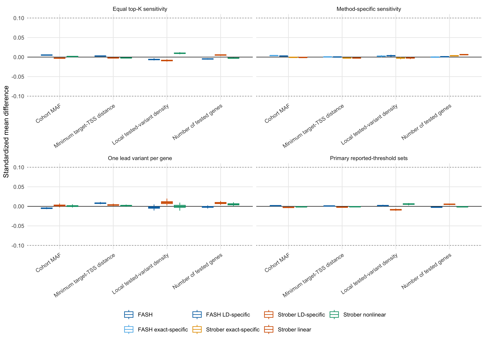

This reproducible R Markdown
analysis was created with workflowr (version
1.7.2). The Checks tab describes the reproducibility checks
that were applied when the results were created. The Past
versions tab lists the development history.
The R Markdown is untracked by Git. To know which version of the R
Markdown file created these results, you’ll want to first commit it to
the Git repo. If you’re still working on the analysis, you can ignore
this warning. When you’re finished, you can run
wflow_publish to commit the R Markdown file and build the
HTML.
Great job! The global environment was empty. Objects defined in the
global environment can affect the analysis in your R Markdown file in
unknown ways. For reproduciblity it’s best to always run the code in an
empty environment.
The command set.seed(20251109) was run prior to running
the code in the R Markdown file. Setting a seed ensures that any results
that rely on randomness, e.g. subsampling or permutations, are
reproducible.
Great! You are using Git for version control. Tracking code development
and connecting the code version to the results is critical for
reproducibility.
The results in this page were generated with repository version
9fbd863.
See the Past versions tab to see a history of the changes made
to the R Markdown and HTML files.
Note that you need to be careful to ensure that all relevant files for
the analysis have been committed to Git prior to generating the results
(you can use wflow_publish or
wflow_git_commit). workflowr only checks the R Markdown
file, but you know if there are other scripts or data files that it
depends on. Below is the status of the Git repository when the results
were generated:
Note that any generated files, e.g. HTML, png, CSS, etc., are not
included in this status report because it is ok for generated content to
have uncommitted changes.
There are no past versions. Publish this analysis with
wflow_publish() to start tracking its development.
Internal exploratory page. This page is
intentionally absent from the workflowr homepage, navigation,
manuscript, and response letter. It reads completed retained caches and
does not modify any existing FASH result.
Question and provisional answer
This analysis asks two related questions:
Are all BF-adjusted FASH dynamic-eQTL variant
discoveries enriched in regulatory annotations relative to
comparable tested variants?
After removing variants that are identical to, or tagged by, a
Strober discovery, do the remaining FASH-specific
discoveries retain evidence of enrichment?
The first question is the more stable primary analysis. The second is
more diagnostic: method-specific labels can change when nearby variants
tag the same association signal.
Provisional readout. The all-FASH discovery set has
no positive core-regulatory category with panel-level BH q < 0.05.
The LD-aware FASH-specific discovery set has no positive core-regulatory
category with panel-level BH q < 0.05. Across the broader displayed
annotations, the LD-aware FASH-specific set has 1 positive category with
panel-level BH q < 0.05: Intron (1.08x, 95% interval 1.03x to 1.14x,
q = 0.048). For comparison, the primary Strober-nonlinear set is
positively enriched in 1 of the seven core-regulatory categories; the
largest estimate is Enhancer-like cCRE (1.15x, 95% interval 1.06x to
1.25x). The exact-ID definition leaves 7,972 FASH-specific variants; the
within-study LD-aware definition leaves 7,808.
The result is evidence about functional
plausibility, not proof that an individual variant is causal
and not an independent validation of FASH’s FDR.
Variant sets
The unit throughout is a unique rsID. FASH calls use cumulative lfdr
FDR at 0.05 after the paper’s BF update. Strober linear and nonlinear
calls use their reported eFDR at 0.05. All controls come from variants
tested by all three methods and present in the study VCF.
The primary sets contain 9,139 FASH variants, 5,387 Strober-linear
variants, and 6,797 Strober-nonlinear variants. The union of the two
Strober sets has 7,927 variants.
Primary enrichment result
Each discovered variant is matched to five non-discovered tested
variants on chromosome, cohort MAF, minimum distance to a tested
target-gene TSS, local tested-variant density within +/-1 Mb, and the
number of tested genes. Matching is repeated for 100 fixed seeds. Points
pool the matched controls across seeds; intervals are
delete-one-autosome jackknife 95% intervals. Filled points have BH q
below 0.05 within the displayed analysis panel. Categories with fewer
than 10 overlaps in either the discovery set or pooled controls are
retained as missing estimates rather than extrapolated from very sparse
counts.
plot_primary_enrichment()

Figure 1. Functional-annotation enrichment for FASH, Strober linear, and
Strober nonlinear variant discoveries at their reported 0.05 thresholds.
Enrichment is relative to matched variants from the common tested
universe. Error bars are delete-one-chromosome 95% intervals.
The plot includes gene architecture from GENCODE
v19, the cell-type-agnostic hg19 ENCODE cCRE registry ENCFF788SJC,
and Roadmap 15-state ChromHMM annotations for iPS-20b (E020),
hESC-derived CD56+ mesoderm (E013), and left ventricle (E095). These
tissues provide an iPSC-centered comparison and two
differentiation-relevant references; they are not exact matches to every
sampled time point.
Are FASH-only discoveries enriched?
An rsID-only comparison classifies 7,972 variants as FASH-specific.
This can overstate specificity when FASH and Strober select different
variants in the same LD block. The sensitivity analysis therefore also
removes a FASH variant when a Strober-union variant lies within 1 Mb and
has dosage r2 ≥ 0.8 in the 19 study donors.
plot_specific_enrichment()

Figure 2. Functional-annotation enrichment for exact-ID-specific and
LD-aware-specific FASH and Strober variants. The LD-aware definition
uses dosage correlation in the 19 study donors and is therefore an
approximate sensitivity analysis.
Interpretation boundary. With only 19 donors, sample
dosage correlations are noisy. The LD-aware panel is useful for checking
whether an exact-ID result is obviously driven by neighboring tags, but
it is not a high-resolution fine-mapping analysis. A reference-panel LD
analysis would be a sensible follow-up if this result becomes
manuscript-facing.
The table below gives the FASH estimates for intronic overlap and the
seven core regulatory categories. Intronic overlap is included because
it is the strongest positive FASH-specific result, although it is not
equivalent to active regulatory annotation.
Two additional analyses probe design choices that can make one method
appear more enriched than another:
Equal top-K: retain the top 5,387 unique variants
for each method, where K is the size of the smallest primary discovery
set.
One lead variant per discovered gene: retain the
lowest-lfdr FASH variant or lowest-p-value Strober variant per
discovered gene.
plot_design_sensitivities()

Figure 3. Equal-top-K and one-lead-variant-per-gene sensitivity analyses
for core regulatory annotations. These panels test whether unequal
discovery counts or repeated nearby discoveries dominate the primary
comparison.
These are sensitivity estimands, not replacements for the
reported-threshold analysis. In particular, top-K changes the
significance criterion, while one lead variant per gene changes both
locus weighting and the number of variants.
Matching diagnostics
The standardized mean differences below compare each discovery set
with its matched controls for every seed. Dotted lines mark +/-0.1 as a
visual reference, not a formal acceptance threshold.
plot_matching_balance()

Figure 4. Matching balance over 100 deterministic seeds. Boxes summarize
standardized mean differences between discovered variants and their
matched controls.
Matching starts with the full coarsened stratum. If no control is
available, it drops local-density bin, then target-distance bin, and
finally chooses from the nearest standardized covariate profiles within
the same chromosome and MAF bin. Chromosome and MAF bin are never
relaxed.
The Roadmap state labels follow the official 15-state
core-mark model and are collapsed into active TSS, enhancer,
transcribed, bivalent/poised, Polycomb-repressed,
heterochromatin/repeats, and quiescent categories. The full set of
collapsed states is retained in the cache even though the main figures
focus on regulatory categories.
Limitations and next decision
Functional overlap is not causal fine-mapping; linked variants can
share an annotation signal.
The control design addresses measured
chromosome/MAF/distance/density/gene- multiplicity differences, but
unmeasured discovery-process differences can remain.
ENCODE cCREs are cell-type agnostic, and the three Roadmap
epigenomes are biologically motivated references rather than exact
time-resolved matches.
Panel-level q-values are descriptive because annotation categories
overlap and the discovery sets were generated from the same tested
universe.
In this run, all-FASH and LD-aware FASH-specific variants agree in
showing no clear positive enrichment in the core promoter/cCRE/iPSC
regulatory annotations. The mild intronic result is too indirect to
support a claim that FASH uniquely recovers more functional variants,
especially because the Strober nonlinear sets show the clearer enhancer
pattern. The current evidence therefore argues for keeping this analysis
internal. If the question remains important, the next useful step is a
deliberately chosen time-resolved iPSC/cardiomyocyte regulatory atlas
plus reference-panel LD, not promotion of the present result to the
manuscript.
Reproduction
The page reads only retained caches. Recreate them from the fixed
FASH fit, Strober tables, study VCF, and versioned annotations with:
The cache was generated at 2026-08-07 20:42:34 UTC. The full command,
input checksums, session information, per-seed balance summaries,
enrichment tables, and LD classifications are retained under
output/revision_simulations/internal/variant_annotation_enrichment/.